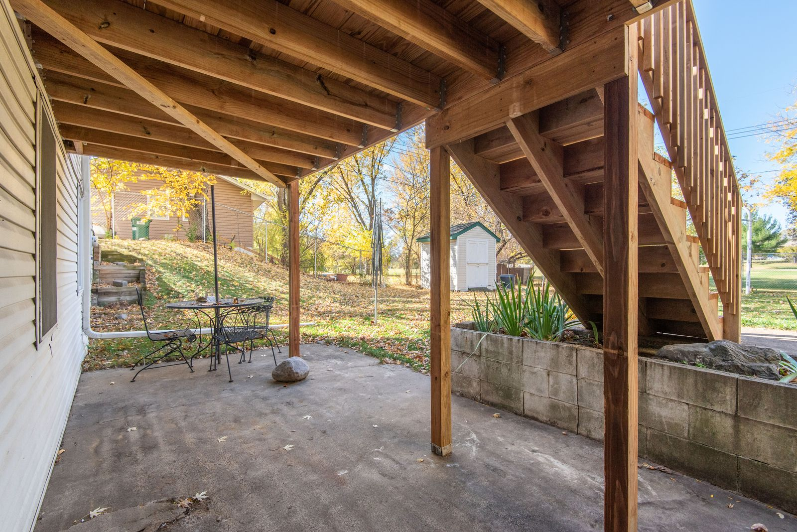

Porch carpentry
Giving the entry a solid footing.
Loose steps and soft boards around the landing can be signs that water is sitting where it shouldn’t. A site visit would check the framing and how the stairs drain.
- Possible scope
- Replace damaged treads, reinforce the handrail, and repair trim around the landing.